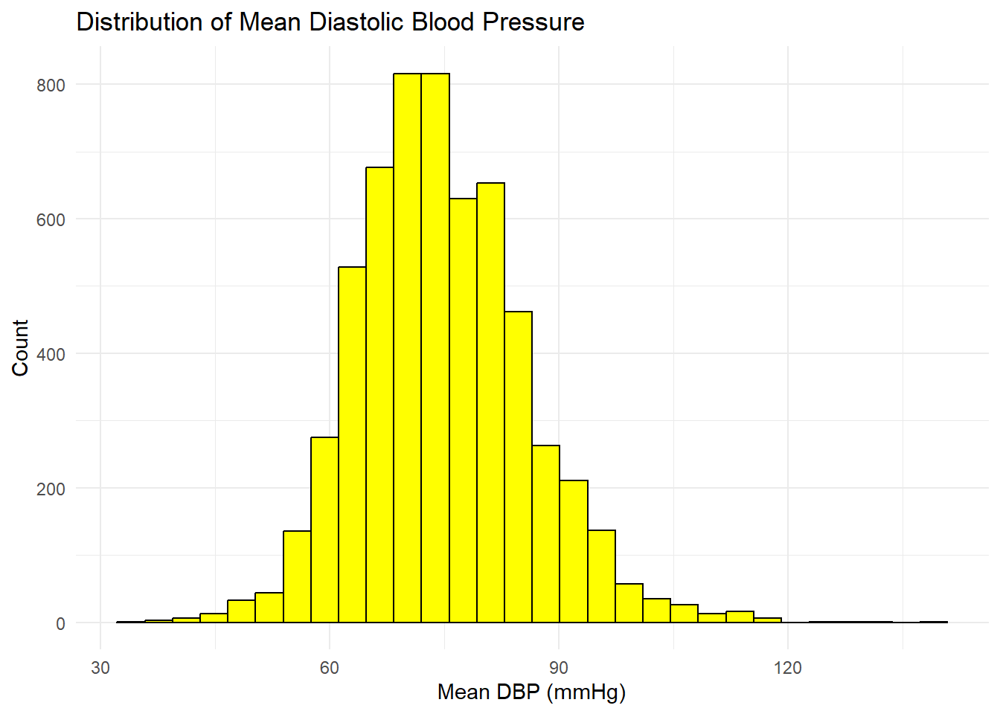
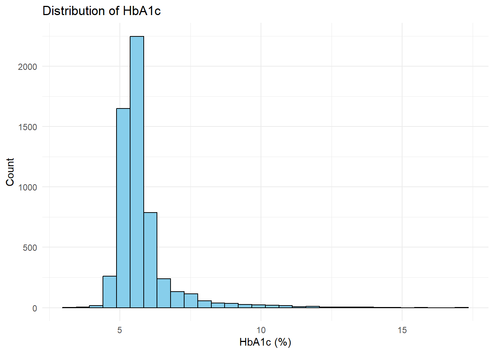

data <-read.csv("nhanes_2021_2023_chronic_disease.csv")str(data)
'data.frame': 7809 obs. of 80 variables:
$ SEQN : int 130378 130379 130380 130384 130385 130386 130387 130388 130389 130390 ...
$ SDDSRVYR : int 12 12 12 12 12 12 12 12 12 12 ...
$ RIDSTATR : int 2 2 2 1 1 2 2 2 2 2 ...
$ RIAGENDR : int 1 1 2 1 2 1 2 2 1 2 ...
$ RIDAGEYR : int 43 66 44 43 65 34 68 27 59 31 ...
$ RIDAGEMN : logi NA NA NA NA NA NA ...
$ RIDRETH1 : int 5 3 2 1 3 1 3 4 3 3 ...
$ RIDRETH3 : int 6 3 2 1 3 1 3 4 3 3 ...
$ RIDEXMON : int 2 2 1 NA NA 1 2 1 1 2 ...
$ RIDEXAGM : logi NA NA NA NA NA NA ...
$ DMQMILIZ : int 2 2 2 2 2 2 2 2 2 1 ...
$ DMDBORN4 : int 2 1 2 2 1 1 1 1 2 1 ...
$ DMDYRUSR : int 6 NA 6 5 NA NA NA NA 6 NA ...
$ DMDEDUC2 : int 5 5 3 2 3 4 5 4 5 3 ...
$ DMDMARTZ : int 1 1 1 3 1 1 3 1 1 1 ...
$ RIDEXPRG : int NA NA 2 NA NA NA NA 2 NA 2 ...
$ DMDHHSIZ : int 4 2 7 2 2 3 1 5 2 5 ...
$ DMDHRGND : logi NA NA NA NA NA NA ...
$ DMDHRAGZ : logi NA NA NA NA NA NA ...
$ DMDHREDZ : logi NA NA NA NA NA NA ...
$ DMDHRMAZ : logi NA NA NA NA NA NA ...
$ DMDHSEDZ : logi NA NA NA NA NA NA ...
$ WTINT2YR : num 50055 29087 80063 15079 16151 ...
$ WTMEC2YR : num 54374 34085 81196 0 0 ...
$ SDMVSTRA : int 173 173 174 179 187 179 181 187 174 185 ...
$ SDMVPSU : int 2 2 1 2 2 1 1 1 2 2 ...
$ INDFMPIR : num 5 5 1.41 0.63 5 1.33 1.32 0.81 5 2.16 ...
$ BMDSTATS : int 1 1 1 NA NA 1 1 1 1 1 ...
$ BMXWT : num 86.9 101.8 69.4 NA NA ...
$ BMIWT : int NA NA NA NA NA NA NA NA NA NA ...
$ BMXRECUM : logi NA NA NA NA NA NA ...
$ BMIRECUM : logi NA NA NA NA NA NA ...
$ BMXHEAD : logi NA NA NA NA NA NA ...
$ BMIHEAD : logi NA NA NA NA NA NA ...
$ BMXHT : num 180 174 153 NA NA ...
$ BMIHT : int NA NA NA NA NA NA NA NA NA NA ...
$ BMXBMI : num 27 33.5 29.7 NA NA 30.2 42.6 43.7 28 46 ...
$ BMDBMIC : logi NA NA NA NA NA NA ...
$ BMXLEG : num 42.8 38.5 38.5 NA NA 42.8 36.1 40 36.2 34 ...
$ BMILEG : int NA NA NA NA NA NA NA NA NA NA ...
$ BMXARML : num 42 38.7 35.5 NA NA 36.2 37.7 39.5 39.2 40.4 ...
$ BMIARML : int NA NA NA NA NA NA NA NA NA NA ...
$ BMXARMC : num 35.7 33.7 36.3 NA NA 35.7 37.4 45.7 31.9 46 ...
$ BMIARMC : int NA NA NA NA NA NA NA NA NA NA ...
$ BMXWAIST : num 98.3 114.7 93.5 NA NA ...
$ BMIWAIST : int NA NA NA NA NA NA NA NA NA NA ...
$ BMXHIP : num 103 112 98 NA NA ...
$ BMIHIP : int NA NA NA NA NA NA NA NA NA NA ...
$ BPAOARM : chr "R" "R" "R" NA ...
$ BPAOCSZ : int 4 4 4 NA NA 4 4 5 3 5 ...
$ BPXOSY1 : int 135 121 111 NA NA 110 143 130 145 113 ...
$ BPXODI1 : int 98 84 79 NA NA 72 76 95 76 78 ...
$ BPXOSY2 : int 131 117 112 NA NA 120 136 128 130 106 ...
$ BPXODI2 : int 96 76 80 NA NA 74 74 100 81 78 ...
$ BPXOSY3 : int 132 113 104 NA NA 115 145 129 124 115 ...
$ BPXODI3 : int 94 76 76 NA NA 75 78 104 81 68 ...
$ BPXOPLS1 : int 82 72 84 NA NA 59 80 76 58 95 ...
$ BPXOPLS2 : int 79 71 83 NA NA 64 80 84 54 95 ...
$ BPXOPLS3 : int 82 73 77 NA NA 64 77 86 62 93 ...
$ WTPH2YR.x: num 56042 37436 85329 NA NA ...
$ LBXGH : num 5.6 5.6 6.2 NA NA 5.1 5.9 4.9 5.5 5.9 ...
$ WTPH2YR.y: num 56042 37436 85329 NA NA ...
$ LBXTC : int 264 214 187 NA NA 183 203 NA NA 159 ...
$ LBDTCSI : num 6.83 5.53 4.84 NA NA 4.73 5.25 NA NA 4.11 ...
$ DIQ010 : int 2 2 1 2 2 2 2 2 2 2 ...
$ DID040 : int NA NA 35 NA NA NA NA NA NA NA ...
$ DIQ160 : int 2 2 NA 2 1 2 2 2 1 2 ...
$ DIQ180 : int 2 1 NA 2 1 2 2 2 1 2 ...
$ DIQ050 : int NA NA 2 NA NA NA NA NA NA NA ...
$ DID060 : int NA NA NA NA NA NA NA NA NA NA ...
$ DIQ060U : int NA NA NA NA NA NA NA NA NA NA ...
$ DIQ070 : int NA NA 1 NA 2 NA NA NA 2 NA ...
$ SMQ020 : int 1 1 2 2 2 1 2 1 1 2 ...
$ SMQ040 : int 3 3 NA NA NA 3 NA 1 3 NA ...
$ SMD641 : int NA NA NA NA NA NA NA NA NA NA ...
$ SMD650 : int NA NA NA NA NA NA NA 6 NA NA ...
$ SMD100MN : int NA NA NA NA NA NA NA 1 NA NA ...
$ SMQ621 : logi NA NA NA NA NA NA ...
$ SMD630 : logi NA NA NA NA NA NA ...
$ SMAQUEX2 : int 1 1 1 1 1 1 1 1 1 1 ...
summary_vars <- nhanes %>%select( RIDAGEYR, # Age BMXBMI, # BMI BMXWT, # Weight BMXHT, # Height BMXWAIST, # Waist circumference SBP_mean, # Systolic BP DBP_mean, # Diastolic BP LBXGH, # HbA1c LBXTC # Total Cholesterol )summary(summary_vars)
RIDAGEYR BMXBMI BMXWT BMXHT
Min. :20.00 Min. :11.10 Min. : 27.90 Min. :133.0
1st Qu.:38.00 1st Qu.:24.70 1st Qu.: 67.50 1st Qu.:159.6
Median :56.00 Median :28.50 Median : 79.80 Median :166.5
Mean :53.37 Mean :29.83 Mean : 83.28 Mean :166.9
3rd Qu.:68.00 3rd Qu.:33.60 3rd Qu.: 95.40 3rd Qu.:174.2
Max. :80.00 Max. :74.80 Max. :248.20 Max. :200.7
NA's :84 NA's :1839 NA's :1853 NA's :1812
BMXWAIST SBP_mean DBP_mean LBXGH
Min. : 60.0 Min. : 70.0 Min. : 34.00 Min. : 3.200
1st Qu.: 89.0 1st Qu.:110.7 1st Qu.: 67.33 1st Qu.: 5.200
Median : 99.7 Median :120.5 Median : 74.00 Median : 5.500
Mean :101.2 Mean :123.0 Mean : 74.70 Mean : 5.774
3rd Qu.:111.5 3rd Qu.:132.7 3rd Qu.: 81.33 3rd Qu.: 5.900
Max. :187.0 Max. :232.3 Max. :139.00 Max. :17.100
NA's :2104 NA's :1947 NA's :1949 NA's :2090
LBXTC
Min. : 62.0
1st Qu.:159.0
Median :185.0
Mean :188.2
3rd Qu.:214.0
Max. :438.0
NA's :2318
2) Histogram of age distribution
ggplot(nhanes, aes(x = RIDAGEYR)) +geom_histogram(bins =30, fill ="purple", color ="black") +labs(title ="Distribution of Age (Adults Only)",x ="Age (years)",y ="Count") +theme_minimal()
Warning: Removed 84 rows containing non-finite outside the scale range
(`stat_bin()`).
3) Histogram of BMI distribution
ggplot(nhanes, aes(x = BMXBMI)) +geom_histogram(bins =30, fill ="darkred", color ="black") +labs(title ="Distribution of BMI",x ="BMI", y ="Count") +theme_minimal()
Warning: Removed 1839 rows containing non-finite outside the scale range
(`stat_bin()`).
4) Histogram of mean SBP distribution
ggplot(nhanes, aes(x = SBP_mean)) +geom_histogram(bins =30, fill ="lightyellow", color ="black") +labs(title ="Distribution of Mean Systolic Blood Pressure",x ="Mean SBP (mmHg)", y ="Count") +theme_minimal()
Warning: Removed 1947 rows containing non-finite outside the scale range
(`stat_bin()`).
5) Histogram of mean DBP distribution
ggplot(nhanes, aes(x = DBP_mean)) +geom_histogram(bins =30, fill ="yellow", color ="black") +labs(title ="Distribution of Mean Diastolic Blood Pressure",x ="Mean DBP (mmHg)", y ="Count") +theme_minimal()
Warning: Removed 1949 rows containing non-finite outside the scale range
(`stat_bin()`).

6) Histogram of total cholestreol distribution
ggplot(nhanes, aes(x = LBXTC)) +geom_histogram(bins =30, fill ="pink", color ="black") +labs(title ="Distribution of Total Cholesterol",x ="Total Cholesterol", y ="Count") +theme_minimal()
Warning: Removed 2318 rows containing non-finite outside the scale range
(`stat_bin()`).
7) Histogram of HbA1C distribution
ggplot(nhanes, aes(x = LBXGH)) +geom_histogram(bins =30, fill ="skyblue", color ="black") +labs(title ="Distribution of HbA1c",x ="HbA1c (%)", y ="Count") +theme_minimal()
Warning: Removed 2090 rows containing non-finite outside the scale range
(`stat_bin()`).

8) Correlation Matrix Heatmap
num_vars <- nhanes %>%select( RIDAGEYR, # Age BMXBMI, # BMI BMXWAIST, # Waist circumference SBP_mean, # Systolic BP DBP_mean, # Diastolic BP LBXGH, # HbA1c LBXTC # Total cholesterol )corr_matrix <-cor(num_vars, use ="pairwise.complete.obs")corrplot(corr_matrix,method ="color",type ="upper",tl.col ="black",tl.cex =0.9,title ="Correlation Between Key Health Variables",mar =c(0,0,2,0))